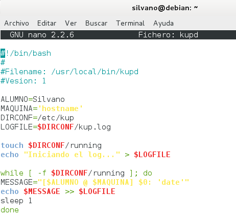
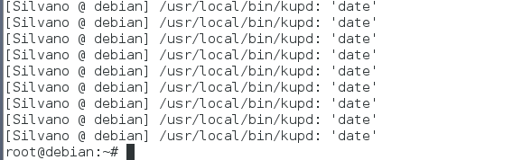
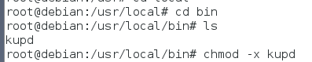
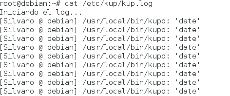
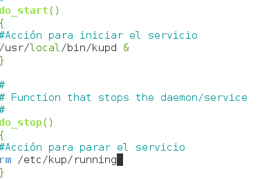
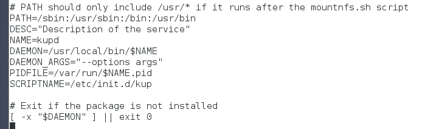
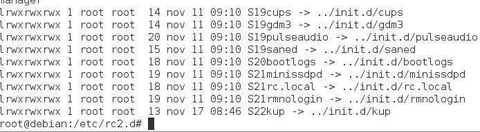
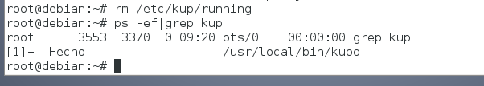
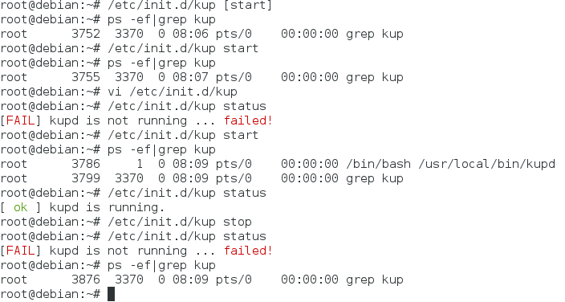
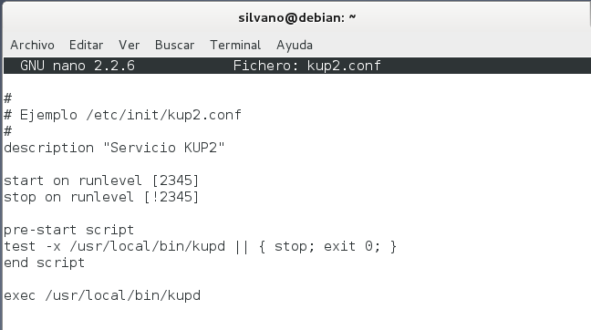

- Módulo: Administración de Sistemas Operativos
- Título del trabajo Servicio
- Componentes del grupo: Silvano Pérez Yanes
- Curso Académico: 2014/2015
- Fecha de entrega: 24 de Noviembre de 2014
En esta actividad vamos a crear archivos log que ejecutaran ciertas tareas. El primero sera un script demonio, cuya tarea será un bucle.
   Para este script, tendrá control de inicio y parada, el cual ejecutaremos y podremos para a nuestro antojo.
    Para acabar creamos un script del estilo upstart, un modo diferente de hacer un servicio.
